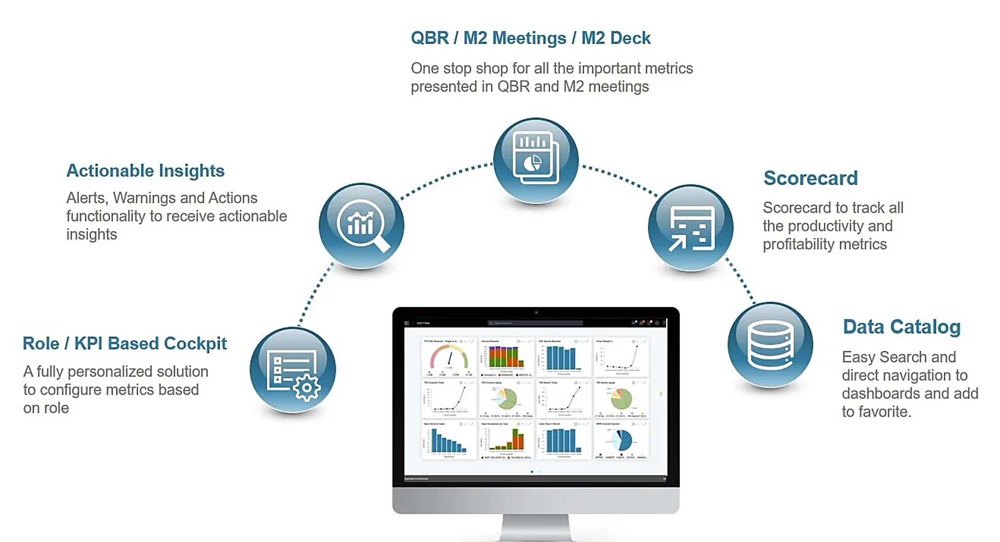

A role-based self-service BI platform with actionable insights, to view KPIs and metrics and take action faster.
Role
Lead UX Designer, later Staff
Company
Global semiconductor equipment maker
Users
Field managers, executives, BI teams, sales

~60%less dependence on BI developers
400+ → 1static dashboards to one role-based cockpit
24user interviews
Context
This is a BI platform for a global field service organisation. People had 400+ dashboards and still could not get an answer. Research said they wanted personalisation, so I gave them full control. Testing proved me wrong. This is what I changed.
The problem
A dashboard tsunami
For four years, nothing was shipped
The company talked about one home for all its dashboards. Dashboards lived on different links, with no search and different access for each. Everyone wanted something different, so nothing moved. With the product manager, I placed every idea on business value against effort. We shipped only search, access by role and favourites.
One home for data, BI, finance and marketing teams.
The first release: one search across dashboards and metrics.
One home did not solve the real problem
People spent their time searching for data, not making decisions. It was not clear who should use which metric, or who should act when a number looked wrong. "How is this KPI calculated?" kept coming up.
Think, see, do, then every feature mapped to each persona.
We decided what to build now, and what can wait
I split every feature into this phase and the future. The cockpit, the dashboard overlay and the resources came first. AI suggestions and mobile views waited.
I gave users full control, but most of them did not want it
I designed a cockpit where people could define views, set filters and pick KPI cards from a long list. In early usability testing, power users liked it. Many business users found it overwhelming. They wanted ready-to-use insights, not more set-up. In the review I clearly said my idea was wrong.
My first idea: choose your KPI cards from a long list.
I made the role the default
We moved to a guided model, with pre-built templates for common needs. Admins set the default KPIs for each role. You pick your role once, and your cockpit is ready. Advanced users can still go deeper. Fewer choices help people decide faster.
Power users still needed depth. So I split control into three levels: a ready role view, personal views and filters, then full chart settings. Each level shows only to people who ask for it. It meant more states to design and test.
One product serves a new manager and a BI expert.
Level 1: readyA role view. Nothing to set up.
Level 2: make it yoursViews, filters, favourites and KPI cards.
Level 3: buildChart settings, measures, dimensions and mapping.